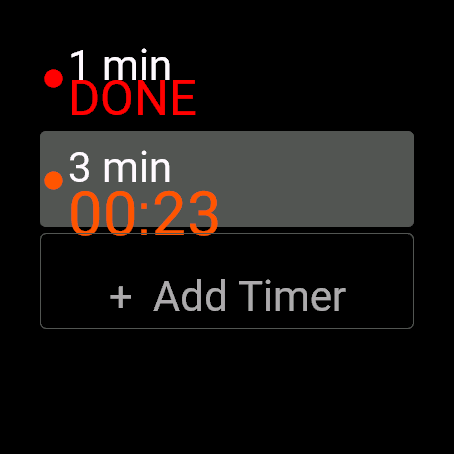
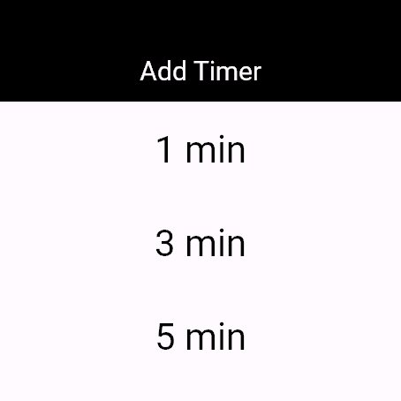
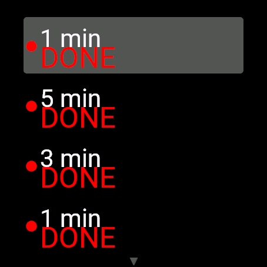

Multitime | A Multi-Timer App for Garmin Watches
When you're cooking pasta and boiling eggs at the same time, a single timer isn't enough. Multitime lets you run several timers at once on one screen of your Garmin watch — each with its own name, counting down independently.
In short: even the free edition runs up to 3 named timers at once, and Multitime Pro extends it with unlimited timers, a vibration pattern per timer and saved presets.
Multitime / Multitime Pro
Several timers on one screen. Swipe to move between them, tap to start, pause or restart. When one finishes it shows DONE right where it is in the list.
⌚ See Multitime (free) on the store ⌚ See Multitime Pro on the storeWho is this for?
- Cooks timing pasta, eggs and the oven all at once
- Anyone who works in Pomodoro blocks (25 minutes of focus, 5 minutes of rest)
- People who run intervals such as HIIT (30 seconds on, 10 seconds off) from their wrist
- Anyone who'd rather not pull out a phone just to set a timer
How does it work?
Pick a time from "+ Add Timer" and the timer joins the list. Run several at once and each counts down on its own line. When one finishes it shows DONE right where it is — no separate alarm screen, no losing track of which one rang.
It comes with quick presets (1, 3, 5, 10, 15, 20 and 30 minutes, Pomodoro 25+5, HIIT 30s/10s), or you can set any custom minutes:seconds.



Free Multitime vs. Multitime Pro
| Item | Multitime (free) | Multitime Pro |
|---|---|---|
| Timers at once | Up to 3 | Unlimited |
| Vibration | Default only | A distinct pattern per timer — know which one finished by feel |
| Saved presets | No (quick presets and custom times still work) | Save your own durations (e.g. "risotto 18:00") for one-tap reuse |
| Price | Completely free | 3 timers free forever; Pro features are a one-time US$2.49 |
Compatible watches
Venu 3 / Venu 3S / vívoactive 4 / Forerunner 255 / Forerunner 255S / Forerunner 265 / Forerunner 265S / Forerunner 955 / Forerunner 965 / fenix 7 / fenix 7S / fenix 7X / fenix 8 AMOLED (43 / 47 mm) / fenix 8 Solar (47 / 51 mm) / fenix 9 (43 / 47 mm) / fenix 9 Pro (43 / 47 / 51 mm) / epix Pro (Gen 2) 47 mm / Instinct 2 / Instinct 2S / Instinct 3 Solar 45 mm (25 models in total)
Price and how to buy
The free Multitime gives you up to 3 timers, forever, at no cost — just install it.
Multitime Pro is listed free on the store but is the paid edition. The free tier inside it (3 timers, default vibration) works forever. The moment you use a Pro-only feature — a 4th timer, a non-default vibration pattern or saving a preset — you'll see a 6-digit code and the URL www.kzl.io/code. A one-time payment of US$2.49 (no subscription) unlocks every Pro feature for good. Open www.kzl.io/code on your phone, enter the code and pay, and it unlocks within a few minutes. Payment is processed by KiezelPay (card or PayPal), not by Garmin. Other watches on the same Garmin account don't need a second purchase.
FAQ
Q. Is Multitime free?
A. Yes. The free Multitime runs up to 3 named timers at once, forever, at no cost (default vibration only).
Q. What does Multitime Pro add?
A. Multitime Pro removes the timer limit, lets you pick a distinct vibration pattern per timer (so you can tell which one finished by feel, without looking) and saves your own custom presets. The Pro features unlock with a one-time US$2.49 payment, no subscription.
Q. Where do I pay for Multitime Pro?
A. Payment is handled by the third-party service KiezelPay, not by Garmin. When you use a Pro-only feature (a 4th timer, a non-default vibration or saving a preset), the app shows a 6-digit code and a URL. Open the URL on your phone and enter the code to buy (card or PayPal).
Q. Will I be alerted if several timers finish close together?
A. Connect IQ only lets an app reserve one background wake-up at a time. If two timers are due within 5 minutes of each other, the second may not raise a watch alert the instant it finishes; open the app and it shows correctly as DONE. This is a platform limit shared by every multi-timer app on Connect IQ.
Q. Which watches are supported?
A. Venu 3, Venu 3S and vívoactive 4; Forerunner 255, 255S, 265, 265S, 955 and 965; the fenix 7 series; fenix 8 AMOLED and Solar; fenix 9 and 9 Pro; epix Pro (Gen 2) 47 mm; and Instinct 2, 2S and Instinct 3 Solar 45 mm — 25 models in total.
All your timers, on one watch
Install the free Multitime now for up to 3 timers, free forever. Need more? Multitime Pro takes the limit off.
⌚ See Multitime (free) on the store ⌚ See Multitime Pro on the store